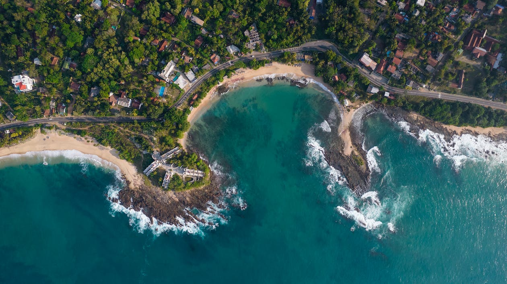

About Hikkaduwa turtle hatchery
The Hikkaduwa Turtle Hatchery, located in the town of Hikkaduwa on the southwest coast of Sri Lanka, is a renowned conservation project dedicated to protecting sea turtles. The hatchery plays a vital role in the preservation of sea turtle populations by providing a safe environment for nesting, hatching, and releasing turtles into the ocean. It serves as an educational center and a popular tourist attraction, allowing visitors to learn about the importance of sea turtle conservation and witness the incredible process of turtle hatchlings making their way to the sea.
At the Hikkaduwa Turtle Hatchery, trained staff and volunteers collect sea turtle eggs from vulnerable nesting sites along the coast. These eggs are then incubated in protected areas within the hatchery, safeguarded from predators and human disturbance. Once the hatchlings emerge from their eggs, they are carefully nurtured until they are strong and healthy enough to be released into the ocean. This process not only increases the survival rate of sea turtle hatchlings but also contributes to the overall conservation efforts by raising awareness about the threats facing these magnificent creatures.
The Hikkaduwa Turtle Hatchery also plays an active role in research and conservation initiatives. It collects valuable data on sea turtle nesting patterns, growth rates, and behavior, contributing to the scientific understanding of these species. Furthermore, the hatchery actively engages with local communities, raising awareness about the importance of protecting sea turtles and involving them in conservation efforts. By combining conservation, education, and research, the Hikkaduwa Turtle Hatchery is making a significant impact in safeguarding Sri Lanka's sea turtle populations and ensuring their long-term survival.
